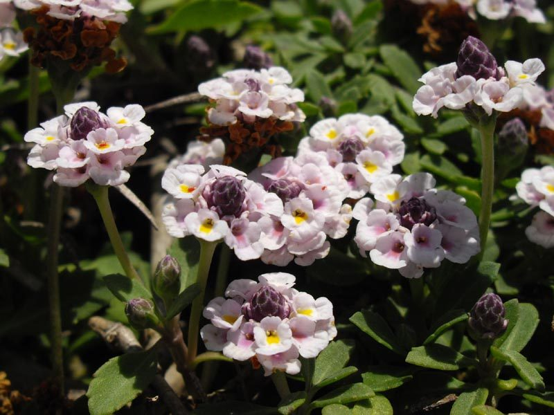

जलपिप्पलीFrog Fruit
Phyla nodiflora · Verbenaceae · FLR-0233

- Scientific name वैज्ञानिक नाम
- Phyla nodiflora (L.) Greene
- Family कुल
- Verbenaceae
- Hindi हिंदी
- जलपिप्पली
- Local names स्थानीय नाम
- jalpippali, jal pippali, frog fruit, phyla
- Status here यहाँ की स्थिति
- native
- Movement आवागमन
- Resident, here all year
- Known from कहाँ दर्ज
- Others have published records from the Basti–Ayodhya districts बस्ती–अयोध्या के ज़िलों से दूसरों के प्रकाशित अभिलेख
- IUCN IUCN
- not evaluated
- Review समीक्षा
- audited and independently read
When to look कब देखें
Expected mainly in June, July, August, September, October, November. मुख्यतः जून, जुलाई, अगस्त, सितंबर, अक्टूबर, नवंबर में अपेक्षित।
Uses and possibilities उपयोग और संभावनाएँ
Drawn from the documented uses in the profile below, where each is labelled traditional, current or a research lead. All uses →
जलपिप्पली / Frog Fruit
Phyla nodiflora (L.) Greene — Verbenaceae
जलपिप्पली — एक निम्न वर्धी, सरसों के समान गंध वाली जलीय घास जो बस्ती की नदियों, नहरों, तालाबों के किनारों, बाढ़ के मैदानों और दलदली भूमि में उगती है। इसके पतले, लोचदार तने जल के किनारे रेंगते हैं और नमी वाली मिट्टी में जड़ें जमाते हैं। लाल-गुलाबी फूलों के छोटे, घने सिर इसे आकर्षक बनाते हैं। लोग इसे "जलपिप्पली" इसलिए कहते हैं क्योंकि यह जल के किनारे पाई जाने वाली काली मिर्च-जैसी पत्तियों वाली घास है। गाय-भैंस इसे चरते हैं, और मेंढकों के लिए भी यह महत्वपूर्ण पौधा है।
Quick Identification त्वरित पहचान
| Feature | Description |
|---|---|
| Form | Prostrate, mat-forming herb, stems 30–60 cm long, rooting at nodes |
| Leaves | Small, opposite, elliptic to obovate, 0.5–1.5 cm long, slightly fleshy |
| Flowers | Tiny, pink to reddish, in dense axillary spikes, 1–2 cm long |
| Fruit | Small, globose capsule, 2–3 mm, containing one seed |
| Stem | Creeping, terete, green, rooting at nodes, flexible |
Field tip: Look for a creeping herb with small opposite leaves and dense little pink flower-spikes along the water's edge. The plant forms dense mats on muddy banks. Crushing the leaves releases a peppery, mustard-like smell.
हिंदी — कैसे पहचानें: जल के किनारे रेंगने वाली घास, छोटे गुलाबी फूलों के घने सिर, छोटी गोल पत्तियाँ। सरसों जैसी गंध।
Morphology आकारिकया
Biometrics (specimens from wetland margins, Basti):
| Feature | Measurement |
|---|---|
| Stem length | 30–60 cm |
| Leaf length | 0.5–1.5 cm |
| Leaf width | 0.3–0.8 cm |
| Flower spike length | 1–2 cm |
| Capsule diameter | 2–3 mm |
Stem and habit: Creeping, spreading, rooting at every node (stoloniferous). Stems are flexible, terete, green or purplish, smooth.
Leaves: Opposite (decussate), small, elliptic to obovate, 0.5–1.5 cm long, slightly fleshy, with short petioles, margins entire or slightly crenate, glabrous or sparsely hairy.
Flowers: Very small, pink to reddish, with four petals, densely packed in axillary spikes 1–2 cm long. Fragrant.
Fruit: A small, globose, two-chambered capsule, 2–3 mm diameter, containing one seed per chamber.
हिंदी: नोड्स पर जड़ें निकलती हैं। पत्तियाँ छोटी, विपरीत, थोड़ी मांसल। गुलाबी फूल घनी बालियों में।
Behaviour & Ecology व्यवहार और पारिस्थितिकता
An ecologically important, moisture-loving plant of warm-region wetlands. It colonizes muddy and sandy banks, thriving in seasonal pools and waterlogged soils. Its ability to root at nodes makes it an excellent pioneer for erosion control. The dense mats provide habitat for frogs and other amphibians, which is why it is valued in wetland restoration. It is grazed by cattle and water buffalo, and is nutritious fodder.
Life Cycle / Phenology जीवन चक्र
| Month / Season | Event |
|---|---|
| May–June | Growth resumes after dry season; water levels rise |
| June–July | Rapid vegetative expansion along water margins |
| July–August | Vegetative growth continues; plants form dense mats |
| August–September | Flowering begins; first flower-spikes |
| September–October | Peak flowering; fruit sets |
| October–November | Seed maturation and dispersal |
| November–May | Dormancy; plants may dry if water recedes |
Weakly annual or perennial, depending on water availability. Persists from year to year in permanently wet sites.
हिंदी: मई-जून में वृद्धि शुरू, अगस्त में फूल, अक्टूबर में बीज। वर्षभर नमी में रहता है।
Associated Species / Interactions संबंधित प्रजातियाँ
- Amphibians: Frogs and toads breed in the mats and forage among the plants.
- Water plants: Grows with water lily, sedges, and other wetland plants.
- Grazing: Cattle and water buffalo forage on the tender shoots.
Pests and Diseases कीट और रोग
- Mostly free of pests in natural conditions.
- Leaf spot fungi occasionally appear.
Agricultural / Human Relevance कृषि प्रासंगिकता
Fodder value: Nutritious fodder for cattle and buffalo, especially during dry seasons when other forage is scarce. The young shoots are tender and palatable.
Wetland restoration: Used in restoration projects for its ability to quickly colonize muddy banks and provide amphibian habitat.
Erosion control: Prevents bank erosion due to dense root systems and mat formation.
Invasive concerns: Considered invasive in some countries outside its native range (USA), but not problematic in India where it is native.
Today: In eastern UP, not considered a weed but rather a useful component of wetland vegetation. Locals who use water resources may harvest it for fodder. Its presence is an indicator of healthy wetlands.
हिंदी: गायों-भैंसों के लिए अच्छा चारा, खासकर गर्मी में। नदी के किनारों को बचाता है। मेंढकों के लिए अच्छा वास।
Expected Locally स्थानीय रूप से अपेक्षित
Not a field record. Written from published accounts for eastern Uttar Pradesh. No confirmed local sighting yet — if you have seen it, that is what the atlas needs.
अभी तक स्थानीय पुष्टि नहीं। यह विवरण प्रकाशित स्रोतों से है, किसी अवलोकन से नहीं।
To be expected along the Ghaghra and Rapti river systems, their floodplain margins, and associated lakes and ponds throughout Basti and Ayodhya districts. Most abundant during and immediately after the monsoon (August–October) when water levels are high. GBIF holds published records from these districts.
Distribution वितरण
Global range: Native to tropical and subtropical Asia; pantropical in wet regions.
In India: Common throughout the plains, especially in the Indo-Gangetic system.
In Uttar Pradesh: Abundant in all wetland areas.
In Basti district / eastern UP: Common and widely distributed along rivers, lakes, and seasonal wetlands.
Research Questions शोध प्रश्न
- Which frog and amphibian species use Phyla nodiflora mats for breeding and foraging? — Amphibian survey.
- How quickly does Phyla nodiflora colonize newly exposed muddy banks, and what is its role in erosion control? — Field measurements over one season.
- Can children observe how nodes root and plants spread vegetatively? — Simple rooting and spreading observation.
- What is the nutritional content of Phyla nodiflora fodder, and do cattle prefer it over other water-marginal plants? — Palatability and nutrition testing.
- क्या बस्ती की नदियों के किनारों पर जलपिप्पली की मात्रा पिछले 10 साल में बढ़ी या घटी है, और क्यों? — Long-term trend survey.
Similar Species मिलती-जुलती प्रजातियाँ
| Species | Key Difference | हिंदी | |
|---|---|---|---|
| Bacopa monnieri (Bacopa / [[brahmi\ | Brahmi]]) | Leaves larger, 1–2 cm, more succulent; flowers white or pale pink; not mat-forming | ब्राह्मी — बड़ी पत्तियाँ, सफेद फूल |
| Alternanthera sessilis (Dwarf Green Alternanthera) | Leaves larger, 2–4 cm; opposite; no flower spikes; more herbaceous | हरा पौधा — बड़ी पत्तियाँ, फूल नहीं |
Field rule: Frog Fruit forms dense mats on wet banks with tiny opposite leaves and dense pink flower-spikes. It is smaller and more delicate than Bacopa, with a distinctive peppery smell.
Taxonomy & Classification वर्गीकरण
Original description. Originally described by Linnaeus as Verbena nodiflora in 1759; transferred to genus Phyla by Edward Lee Greene in 1894.
Subspecies. Monotypic.
Family and order placement. Order Lamiales, family Verbenaceae (the vervain family), related to verbenas and other aromatic plants.
Phylogenetic notes. Phyla is closely related to Verbena and other mat-forming verbenaceae.
IUCN status rationale. Not evaluated. Abundant and widespread; no conservation concern.
Photo Gallery फोटो गैलरी
No photos yet — add field photos to media/species/frog_fruit/ and run node scripts/sync_photos.js.
Wanted photos:
- Mat-forming plants at water's edge
- Pink flower spikes close-up
- Roots at nodes on sand
- Habitat view (river or lake margin)
References संदर्भ
- Linnaeus, C. (1759). Species Plantarum, 2nd edn., Vol. 2, p. 21 (as Verbena).
- Hooker, J.D. (1885). Flora of British India, Vol. 4.
- Duthie, J.F. (1903). Flora of the Upper Gangetic Plain.
- Champion, H.G. & Seth, S.K. (1968). A Revised Survey of the Forest Types of India.
- Botanical Survey of India. State Flora Series: Flora of Uttar Pradesh. BSI, Kolkata.
- GBIF Occurrence Data — Phyla nodiflora (2026).
Source file: species/flora/aquatic/frog_fruit.md